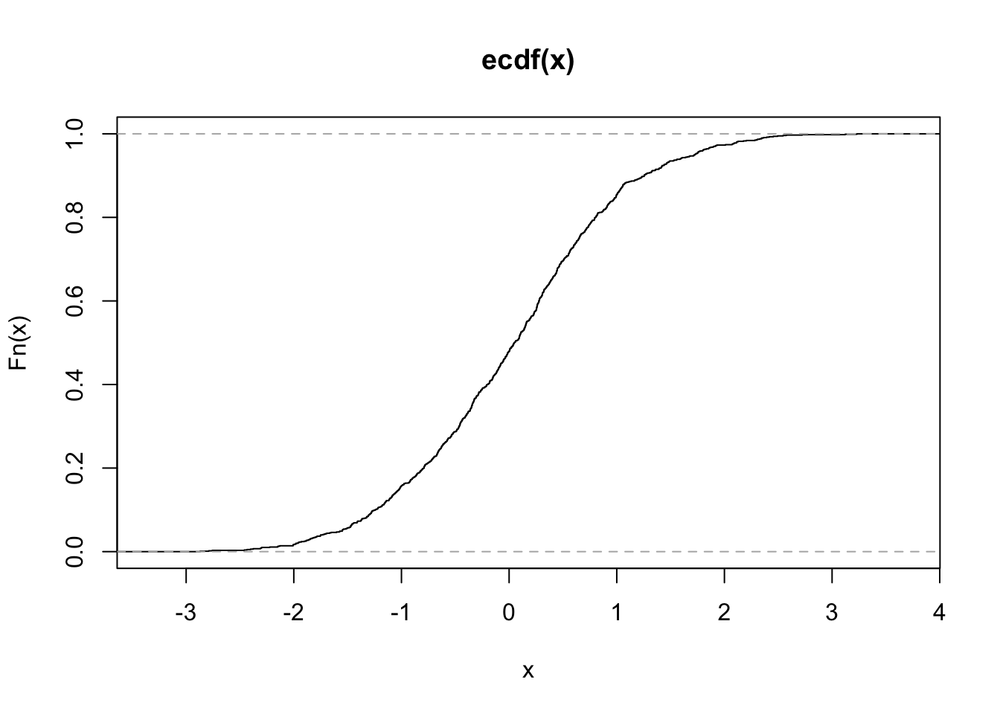
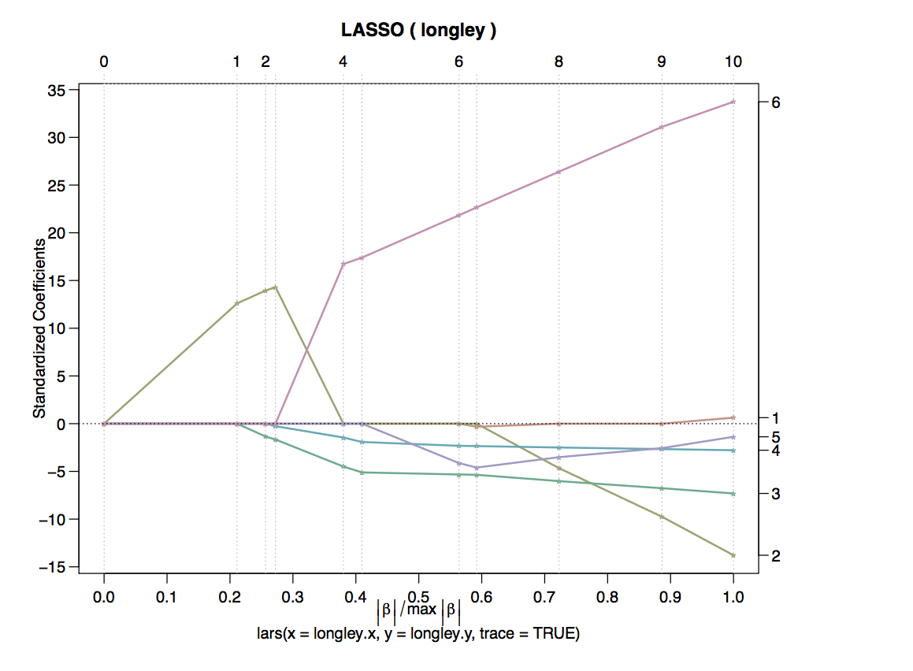

Chapter 9 Variable Selection - Ridge Regression an Lasso
Except for trees, none of the techniques introduced so far perform variable selection. Variable selection is particularly important when working with high-dimensional data, namely for two reasons:
- In the case of highly correlated predictors, regression coefficient estimates become ill-determined, which means - loosly speaking - that there are a lot of different values for each predictor such that the model leads to the same prediction if the other coefficients are set wisely. This is undesirable. Note that the fitted values are not ill-determined since they don’t vary when changing the coefficients.
- In cases where we have \(\mathbf{n}> \mathbf{p}\), we cannot estimate many models, so for example OLS. That means we first need to select some predictors before we can proceed.
In addition, a model with few predictors is often easier to interpret than a model with many predictors.
Ride and Lasso - which is which? Ridge regression - two words, is the method with an L2-penalty. Lasso is just one word - and has an L1-penalty.
9.1 Ridge Regression
Consider the OLS Problem \[y_i = \beta_0 + \beta_1 x_1 + \beta_2 x_2 + ... + \beta_p x_p + \epsilon\] We can demean the predictors and obtain \[y_i = \beta_0 + \beta_1(x_1 - \bar{x}_1) + \beta_2(x_2 - \bar{x}_2) + ... + \beta_p(x_p - \bar{x}_p) + \epsilon\] In which case \(\hat{\beta}_0 = \bar{Y} - \hat{\beta}_1\bar{X} = \bar{Y}\) and can take it to the other side and end up with the model. \[\tilde{y} = \hat{\beta}_1 \tilde{x}_1 + \hat{\beta}_2 \tilde{x}_2 + ... \hat{\beta}_p \tilde{x}_p +\epsilon\]
With all variables having a mean of zero. Hence we got rid of the intercept. In order to compare the different \(\beta\)s, we should also scale the predictors. Hence, if there are two variables that are highly correlated, we can expres this part of the model equation as follows \[ \beta_j x^{(j)} + \beta_k x^{(k)} \approx (\beta_j + c \beta_j ) x^{(j)}\] You can see that for each \(\beta_j\), we can find an appropriate \(\beta_k\) so that the sum does not change. That’s what we meant above when we said the coefficients are not stable but the sum is. One way to make the coefficients better-determined is to impose further conditions on them. For example, we can restrict \(\sum\limits_{j = 1}^p \beta_j < s\). The regression problem becomes \[\beta = \arg\min\limits_{\|\beta\| < s}\|X\beta\|\] which is equivalent to the lagrangian problem \(\arg\min\limits_{\beta} \{ \|X \beta \|+ \lambda \| \beta \|_2^2 \}\) With a one-to-one mapping of \(s \rightarrow \lambda\) Note that this is a generalization of the least square solution since it contains the least squares solution for \(\lambda = 0\). The resulting normal equations are \[(X'X + \lambda I)^{-1}\hat{\beta}^* = X'Y\] Where one can see that the matrix to invert will be non-singular \(\lambda > 0\), even if \(X'X\) is singular. Due to this shrinking, it is intuitive that the \(E[\hat{\beta}] \neq \beta\), that is, the coefficient will be biased. That can be seen easily if we sneak in the ols solution for which we know it is unbiased. \[\begin{equation} \begin{split} (E[\hat{\beta}] = & E[(X'X + \lambda I)^{-1}X'y]) \\ & E[(X'X + \lambda I)^{-1} (X'X)(X'X)^{-1}X'y] \\ & E[(X'X + \lambda I)^{-1} (X'X)\beta^{ols}] \\ & (X'X + \lambda I)^{-1} (X'X)\beta^{ols} \end{split} \end{equation}\]Whereas \(E[\hat{\beta}] \neq \beta\) for \(\lambda > 0\) Also, we can see that for \(\lambda \rightarrow \infty\), \(\beta \rightarrow 0\).
However, since by introducing a bias, we at the same time decrease the variance of our estimator. Therefore, we can optimize the bias-variance trade-off by finding an appropriate \(\lambda\), e.g. by (generalized) cross-valdiation. The regularization parameter lamda here is similar to the one we saw in the chapter about smoothing splines.
To estimate the model, we can use the MASS package.
fitted <- MASS::lm.ridge(
GNP.deflator ~.,
# it's lamBda, not lamda! R won't complain due to ... !
lambda = seq(0, 0.1, by = 0.001),
data = longley
)We can plot the coefficients for different values of \(\lambda\) in a so-called trace plot.
plot(fitted)
We can also get the coeficients for each lamda we estimated and select the best model and get the usual lm summary for it.
coef(fitted) %>%
as_data_frame()## # A tibble: 101 x 7
## `` GNP Unemployed Armed.Forces Population Year
## <dbl> <dbl> <dbl> <dbl> <dbl> <dbl>
## 1 2946.85636 0.2635272 0.03648291 0.011161050 -1.737030 -1.41879853
## 2 1895.97527 0.2392348 0.03100610 0.009372158 -1.643803 -0.87657471
## 3 1166.33337 0.2209952 0.02719073 0.008243201 -1.565026 -0.50108472
## 4 635.78843 0.2066111 0.02440554 0.007514565 -1.496246 -0.22885815
## 5 236.65772 0.1948539 0.02230066 0.007043302 -1.434886 -0.02473192
## 6 -71.53274 0.1849806 0.02066688 0.006744636 -1.379323 0.13231532
## 7 -314.43247 0.1765137 0.01937157 0.006565392 -1.328460 0.25560068
## 8 -509.05648 0.1691312 0.01832674 0.006470736 -1.281519 0.35395451
## 9 -667.11647 0.1626072 0.01747181 0.006437042 -1.237922 0.43345188
## 10 -796.92303 0.1567781 0.01676376 0.006447832 -1.197224 0.49840118
## # ... with 91 more rows, and 1 more variables: Employed <dbl>MASS::select(fitted)## modified HKB estimator is 0.006836982
## modified L-W estimator is 0.05267247
## smallest value of GCV at 0.006As pointed out above, \(\lambda = 0\) corresponds to the OLS solution.
9.2 Lasso
The Lasso is essentially just a variant of ridge regression whereas the penalty is the L1-norm instead of the squared L2 norm. \[\arg\min\limits_{\beta} \{ \|X \beta \|+ \lambda \| \beta \|_1 \}\] Where \(\| \beta \|_1 = \sum\limits_{j = 1}^p|\beta_j|\), i.e. the sum of the absolute values of the coefficients. The mathematical properties of the L1-norm imply that some coefficients actually will become exactly zero, which is not the case for ridge regression. In the latter case, a decrease of a coefficient from \(0.1\) to \(0\) will decrease the penalty from \(0.001\) to \(0\), whereas a decrease from a coefficient of \(10\) to \(9\) wil decrease the penalty from \(100\) to \(81\). Hence, Lasso will tend to shrink larger coefficients more since the loss function rewards this more.

The above plot shows the Lasso traces for six coefficients. On the x-axis we don’t have lamda, but the norm of the Beta vector. \(max |\beta|\) corresponds to the OLS solution with \(\lambda = 0\) since for any other value of \(\lambda\), the norm is smaller. Hence, \(x = 1\) corresponds to the OLS solution. On the other hand, \(x = 0\) corresponds to \(\lambda = \infty\), since \(\|\beta\|\) equals zero. In this case, all coefficients are zero obviously.
Note that both Lasso and Ridge regression have worse in-sample performance than OLS, since the coefficients are biased. However, the out-of-sample performance is better since the bias variance trade-off is optimized.
9.3 Extensions
9.3.1 Elastic Net
The elastic net combines the penalties used in ridge regression and lasso. \[ \hat{\beta} = \|Y- X\beta\|^2 \;\; \text{subject to}\; (1 - \alpha) \|\beta\|_1 + \alpha \|\beta\|^2 <t\] The lasso penalty \((1 - \alpha) \|\beta\|_1 + \alpha \|\beta\|^2\) is a sum of a structky convex function and a convex function and hence strictly convex.
9.3.2 Adaptive Lasso
The idea is to use a different weight for each coefficient in the penalty term: \[ \hat{\beta} = \arg\min\|Y- X\beta\|^2 \;\; + \lambda \sum\limits_{j = 1}^p w_j|\beta_j|\] The idea is now to use consistent esitimates for all coefficients, e.g. through least squares. Then, do a lasso and set \(w_j = \frac{1}{\hat{\beta_j}}\). This means that we now penalize small coefficients more, so they get shrunken to zero more quickly, whereas large coefficients (which are clearly non-zero) are given a low weight so their bias after the shrinkage is small
9.3.3 Relaxed Lasso
The relaxed lasso is also based on the idea of doing variable shrinkage isolated from variable selection. Hence, the idea is doing a lasso first to obtain the relevant variables. Then, a combination between lasso and OLS is used to obtain the final model
\[\hat{\beta}^{\lambda, \phi} = \arg\min\limits_{\beta} \sum\limits_{i = 1}^n(yi - \sum\limits_{j \in \mathcal{M}_\lambda} \beta_j x_{i, j})^2 + \lambda \phi \sum\limits_{j = 1}^p|\beta_j|\]
For \(\phi = 0\), the final estimates are just the OLS estimates with \(\mathcal{M}_\lambda\), \(\phi = 1\) just reproduces the lasso that was used for variable selection.
9.3.4 (Sparse) Group Lasso
When dealing with categorical data with $ J>2$, the techniques introduced above have the drawback that they may select just a few of the dummy variables to be non-zero. However, for interpretability, we want to keep all or none of the dummies in the model instead of selecting each variable independently. This can be achieved with a group lasso. We first split the design matrix into \(L\) design matrices where each of them contains a block of \(p_l\) predictors and all observations and it holds that \(\sum\limits_{p = 1}^L p_l = p\). We also split the corresponding coefficient vector \(\beta\) into pieces. Then, we group-wise scaled L2 penalties.
\[ \|Y-\sum\limits_{l = 1}^L X_l\beta_l \|_2^2 +
\lambda \sum\limits_{l = 1}^L \sqrt{p_l} \|\beta_l\|_2\] Each continuous predictor forms its own group, categorical predictors are put in one group. Note that for \(L = p\), the problem reduces to a lasso
although we have an L2-penalty. This is because the L2 norm and the L1 norm of a scalar concide, or mathematically speaking \(\||s\|_2 = \sqrt{s^2} = |s| = \|s\|_1\). This acts like a lasso on the group level, i.e. it sets all coefficients of a group to zero - or none of them.
There is an extension called sparse group lasso which can bring sprasity within a group. This is not helpful for dummy variables, but for situations where you have predictors that form a group since they are highly correlated or otherwise connected. It also applies the idea of an elastic net penalty to the group lasso. The formula is
\[ \|Y-\sum\limits_{l = 1}^L X_l\beta_l \|_2^2 + \lambda_1 \sum\limits_{l = 1}^L \sqrt{p_l} \|\beta_l\|_2 + \lambda_2 \|\beta_l \|_1\]
9.3.5 Oracle Properties
The adaptive lasso (unlike all other lasso-related techniques presented here posseses so-called oracle properties). Consider the set $, which contains the all non-zero perdictor variabiables from a large number of available predictors. \[ \mathcal{M} = \{j \in \{1, ..., p\}; \; \beta_j \neq 0\}\] The set \(\mathcal{M}_\lambda\) contains all predictors that were estimated to be non-zero via a Lasso estimate \[ \mathcal{M}_\lambda = \{j \in \{1, ..., p\}; \; \hat{\beta}_j \neq 0\}\] An estimator has oracle properties if \[ \mathcal{M}_\lambda =\mathcal{M} \; \text{for} \; n \rightarrow \infty\] Lasso typically produces too large of non-zero predictors, but all non-zero predictors are in that set, that is \[ \mathcal{M}_{\lambda}^{Lasso} \supset \mathcal{M} \]